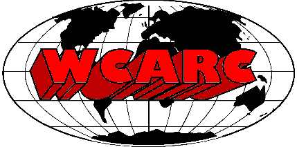

The WCARC 6m, 2m, 1.25m, 70cm, 35cm and 23cm Beacons are operational.
West Carleton Amateur Radio Club

Ontario Corporation Number 000450416
Home Page
Our next meeting will be at 7:00pm on Monday, April 17, 2017 at our
regular location: Sobeys 840 March Road in Kanata North.
Paul Coverdale (VE3ICV) will speak about Vector Network Analyzers and
Applications, featuring the SARK-110.
Please join us.